정주샘 · 초등학생과 함께 읽는 수업 자료
모르면 묻고, 마음은 말로, 친구는 존중하며
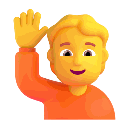
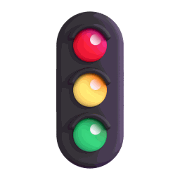
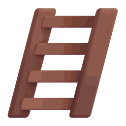
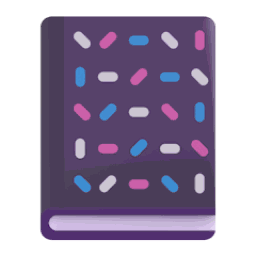
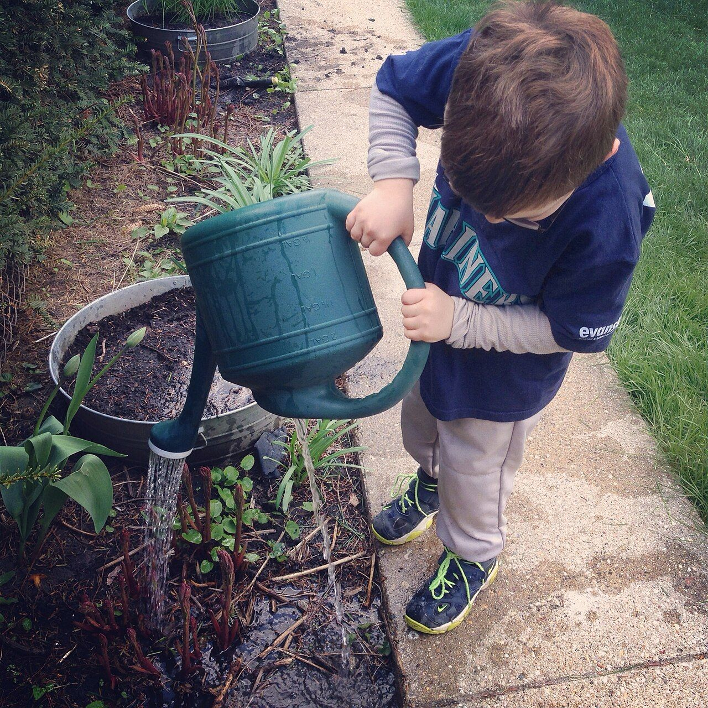
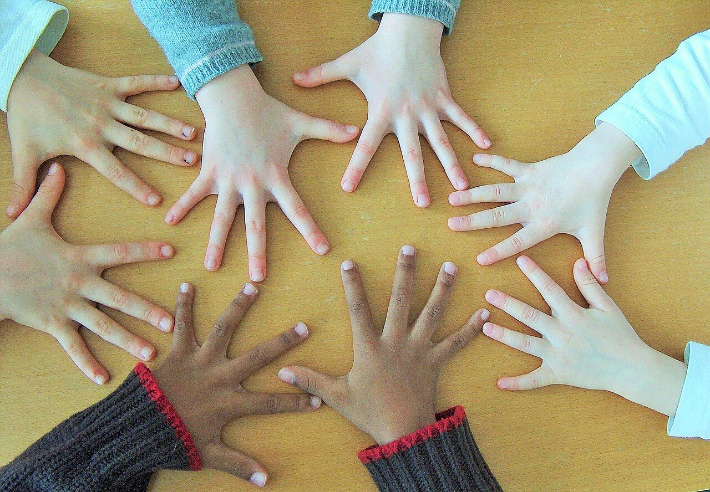
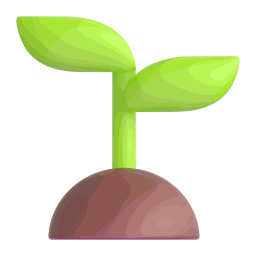
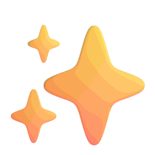
오늘 이 시간이 끝나면
“여기까지는 알겠는데, 그다음이 어려워요.”
멈추고, 생각하고, 말로 전하기
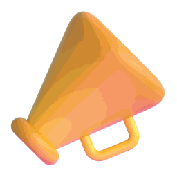
“○○ 때문에 어려워요. 도와주세요.”
시작하기 전에, 꼭 기억할 약속
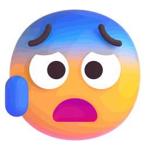
누가 나를 계속 괴롭힐 때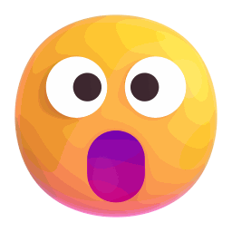
겁을 주거나 무서운 일이 있을 때선생님, 보호자,
믿을 만한 어른
도움을 받는 건 약한 게 아니에요.
몸풀기
있으면 살짝 손을 들어 봐요
모르는 게 있는데 손을 못 들었어요
친구가 내 물건을 말없이 가져가서 화가 났어요
장난이 싫었는데 싫다고 말을 못 했어요
줄넘기가 안 돼서 “나는 원래 못해” 했어요
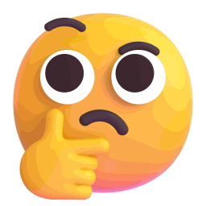
“오늘 뭐 했지?” 하나도 생각이 안 났어요
오늘의 길
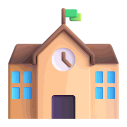
우리 학교
모르면 물어보기
마음은 말로, 행동은 다시
싫으면 말하고, 싫다면 멈추기
다음 방법 찾기
오늘의 한 줄
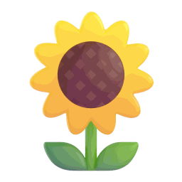
나의 마음 정원
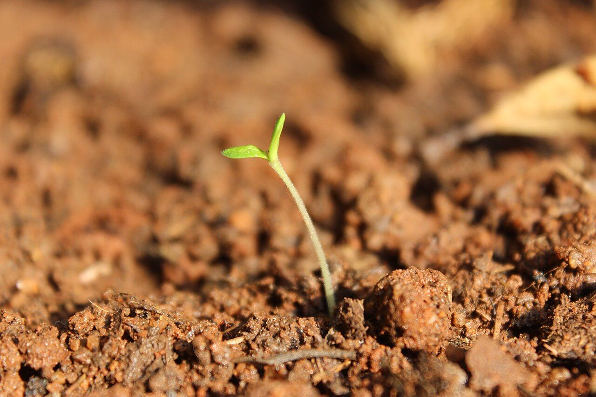
첫 번째 씨앗
궁금 씨앗
모르면 숨기지 말고
물어봐요
궁금 씨앗 · 모르는 것이 생기면
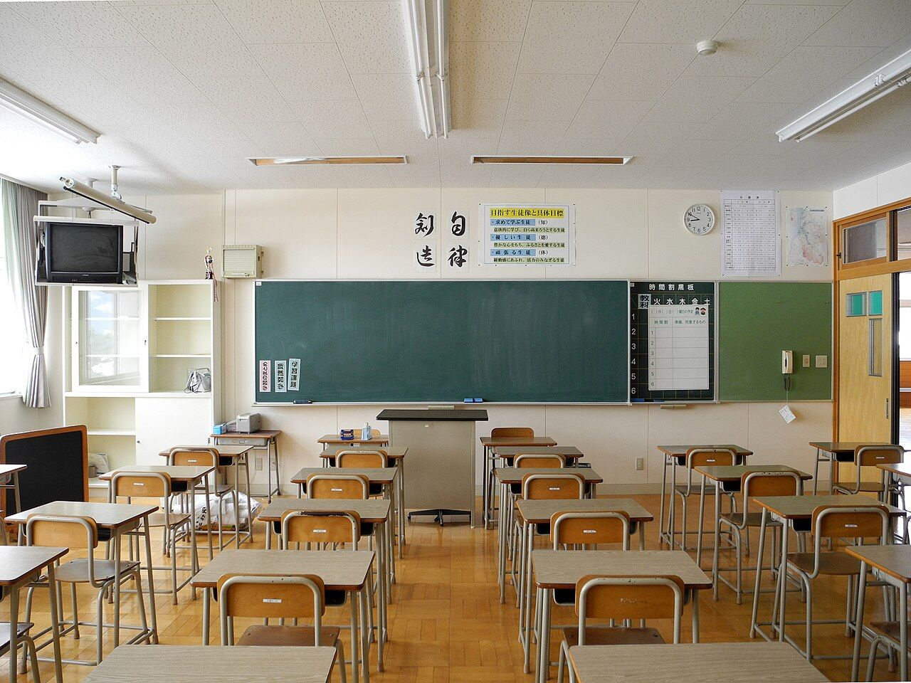
모르는 건 ‘내가 못난 것’이 아니라
오늘 배울 것이 하나 생긴 것이에요
따라 말해 보기
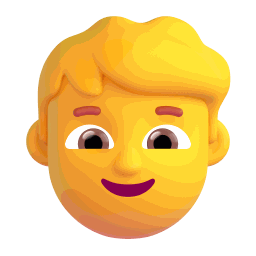
“이 말이 무슨 뜻인지 모르겠어요.”
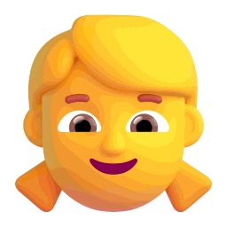
“여기까지는 알겠는데, 그다음이 어려워요.”
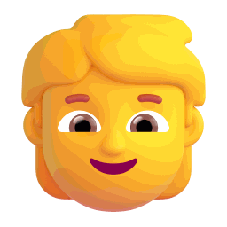
“다른 예를 들어 주실 수 있나요?”
손들기 어렵다면?
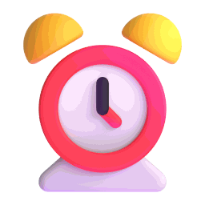
수업이 끝난 뒤 선생님께 여쭤보기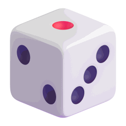
퀴즈!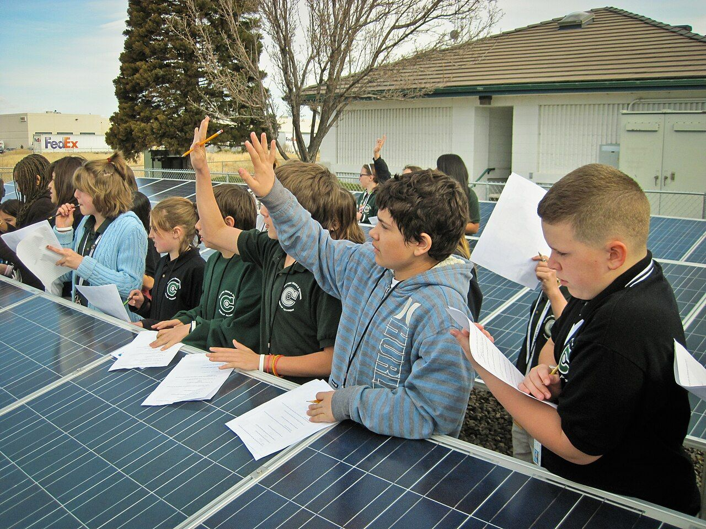
“그것도 몰라?”
하고 웃는다
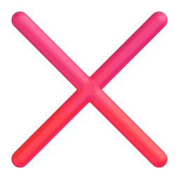
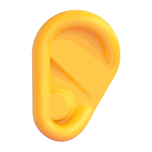
귀 기울여
듣는다
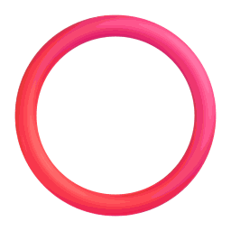
웃음이 돌아오면 다음엔 아무도 질문을 못 해요.
친구의 질문 덕분에 우리 모두 더 알게 돼요.
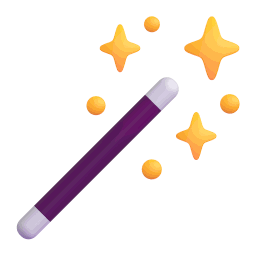
카드를 누르면 정답이 나와요두 번째 씨앗
신호등 씨앗
속상한 마음은 말로,
행동은 다시 골라요
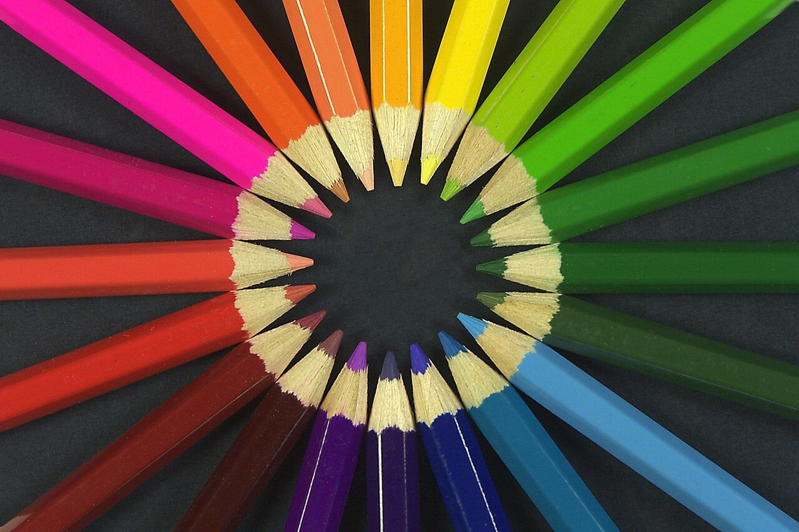
신호등 씨앗 · 속상한 마음이 들 때
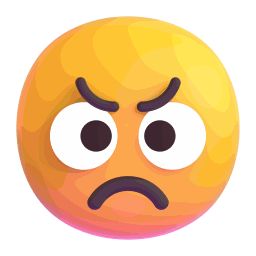
화나요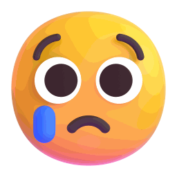
속상해요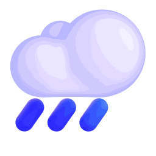
지금 내 상태를 알려 주는 신호예요. 날씨처럼 찾아왔다가 바뀌어요.
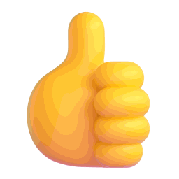
그다음에 내가 고르는 것이에요.
마음 신호등
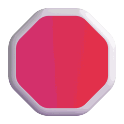
손과 발을 멈추고, 숨을 크게 세 번 쉬어요.
무엇 때문에 속상하지? 지금 무엇을 바라지?
있었던 일 + 바라는 것 + 다음 부탁을 말로 전해요.
바꿔 말하기 연습
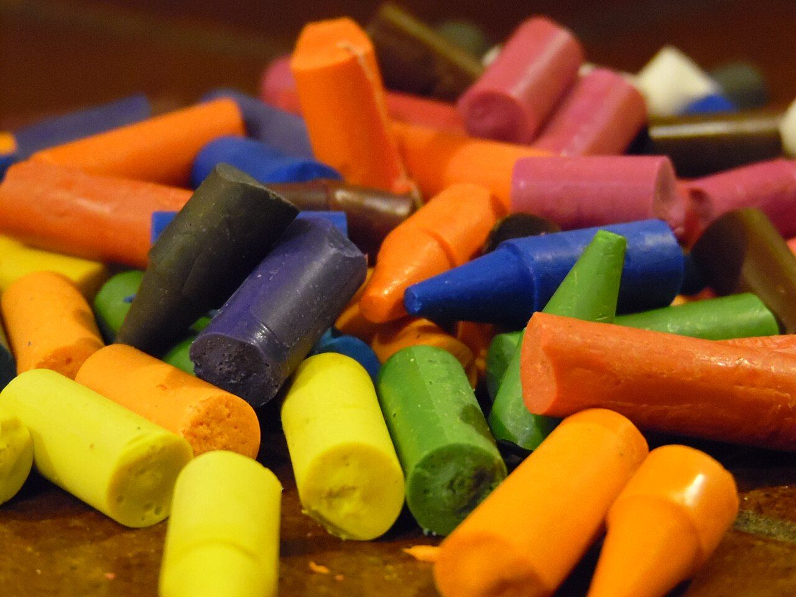
↓ 이렇게 바꾸어 말해 봐요
“허락 없이 가져가서 속상했어.”
“지금 돌려줘.”
“다음에는 먼저 물어봐 줘.”
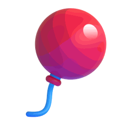
같이 해 보기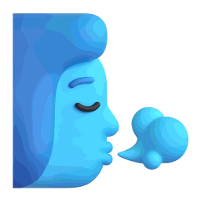
코로 들이마시고…입으로 후—
코로 천천히 들이마시며 풍선을 부풀려요마음속으로 하나, 둘, 셋, 넷
입으로 후— 내쉬며 풍선을 줄여요마음속으로 하나, 둘, 셋, 넷
세 번 하고 나면, 노란불로 가요무엇 때문에 속상하지?
숨쉬기가 불편하면 물 한 모금 마시기, 잠깐 자리 옮기기도 좋아요.
세 번째 씨앗
존중 씨앗
존중하는 것과
다 참는 것은 달라요
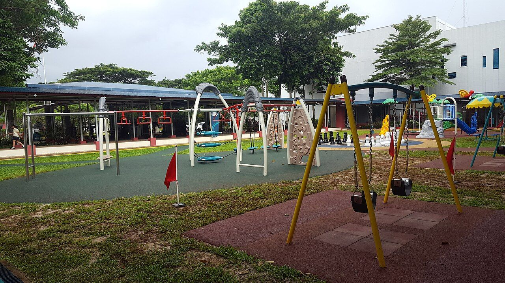
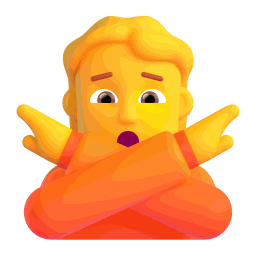
존중 씨앗 · 친구와 지낼 때
아끼는 물건을 빌려주기 싫을 때, 장난이 아플 때
“멈춰 줘.”
“그건 빌려주기 싫어.”
내가 재미있어도, 친구가 싫다고 하면 멈추는 것이 존중이에요.
“알았어, 그만할게.”
“아까 네가 말할 때 끼어들어서 미안해. 그런데 나도 내 생각을 끝까지 말하고 싶어.”
OX 퀴즈!
친구와 사이좋게 지내려면, 싫어도 다 참아야 해요.
나는 재미있으니까, 친구가 싫다고 해도 계속해도 돼요.
내 잘못은 사과하면서, 내가 바라는 것도 부탁할 수 있어요.
문제 칸을 하나씩 누르면 정답이 나와요
이건 꼭 기억해요
보호자나 선생님께 알려요
다른 믿을 만한 어른에게 다시 알려요
알리는 건 나와 친구를 지키는 일이에요. 존중 씨앗 획득!
네 번째 씨앗
다시 씨앗
나를 혼내는 대신,
다음 방법을 찾아요
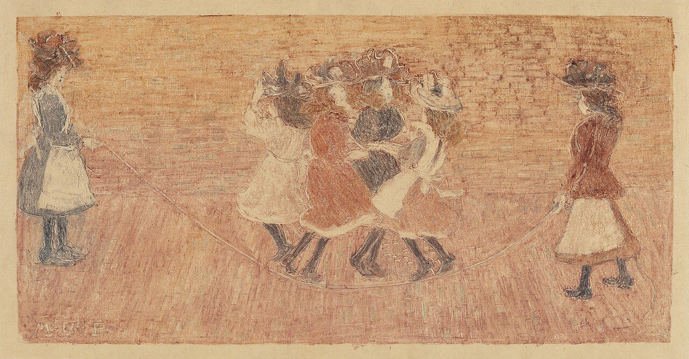
다시 씨앗 · 잘되지 않을 때
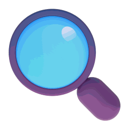
“줄이 발에 자꾸 걸렸어. 줄 길이부터 확인해 봐야겠어.”
“설명은 들었는데 순서를 잊었어. 그림으로 표시해 달라고 해야겠어.”
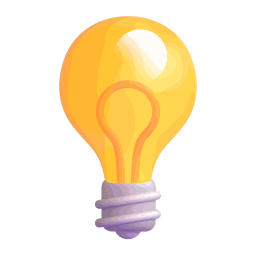
무슨 일이 있었는지 자세히 말하면, 바꿔 볼 것이 보여요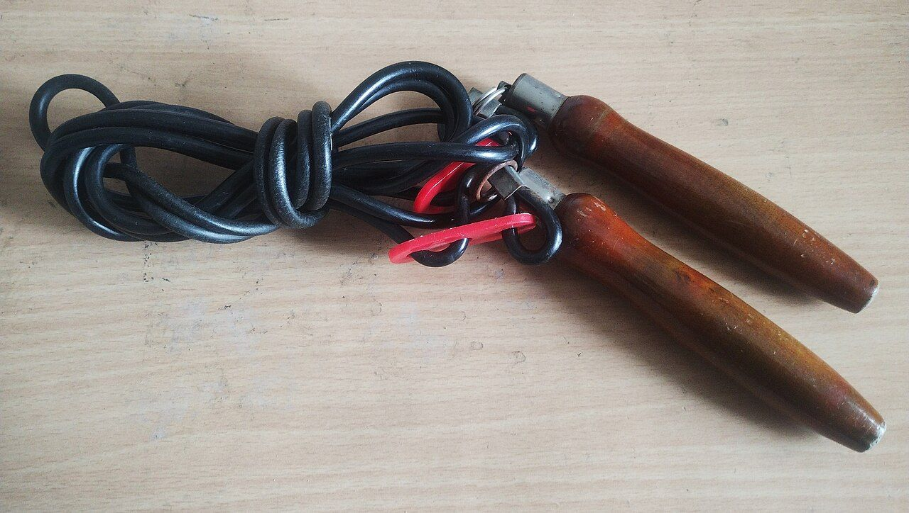
다음 방법 사다리
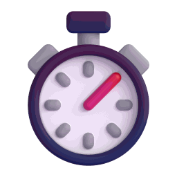
조금씩, 여러 번 해 봐요.
“순서를 그림으로 표시해 주세요.”
너무 어려우면 한 부분씩 해요.
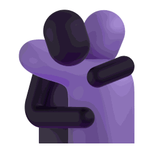
속상하면 속상하다고 말해요. 같이 찾아 줄 사람도 있어요. 다시 씨앗 획득!다섯 번째 씨앗
기록 씨앗
작은 기록 한 줄에
오늘의 내가 있어요
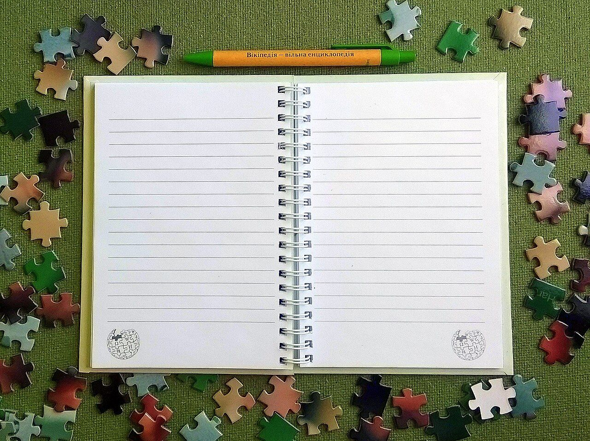
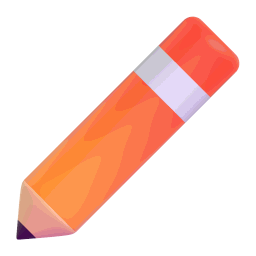
기록 씨앗 · 하루를 돌아볼 때
모르는 문제를 그냥 넘기지 않고 물어봤다.
화가 났지만 밀지 않고 말로 전했다.
너무 피곤해서 숙제를 시작하기 어려웠다.
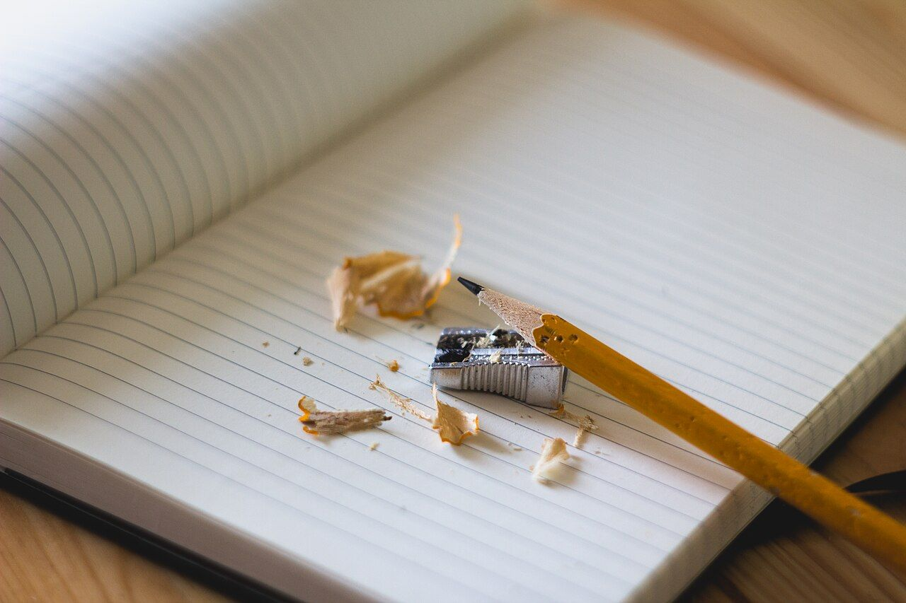
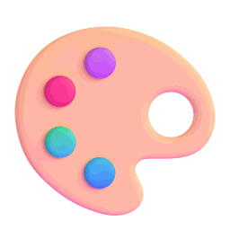
글이 어려우면 그림도 좋아요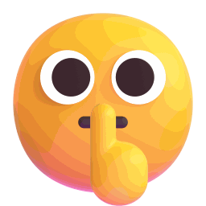
모두에게 보여 주지 않아도 돼요같이 해 보기
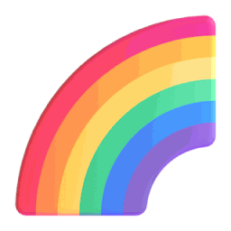
무지개도착!
모르면 숨기지 말고 물어봐요
마음은 말로, 행동은 다시 골라요
싫으면 말하고, 싫다면 멈춰요
나를 혼내는 대신 다음 방법을 찾아요
작은 한 줄로 오늘의 나를 봐요
씨앗은 한 번에 자라지 않아요.
잘 안된 날에도, 다시 물을 주면 돼요.
마지막 활동
떠오르는 사람의 이름을 적어 보세요.
이렇게 시작해도 돼요.
“○○ 때문에 어려워요.
도와주세요.”
멋진 답보다, 도움을 청할 사람이 떠오르는 것이 먼저예요.
선생님·보호자께
아이를 이 다섯 가지에 맞춰 평가하거나 점검하는 체크리스트로 쓰지 말아 주세요.
중·고학년 눈높이로 썼어요. 저학년은 씨앗 하나씩, 비슷한 경험을 먼저 묻고 들어가 주세요.
실제 학생의 사례나 연구 참여자의 말이 아닙니다. 신호등 3단계·풍선 숨쉬기도 이 자료가 만든 연습입니다.
괴롭힘·위협은 마음가짐의 문제가 아니라 어른이 개입할 일입니다. 피해 학생에게 화해·용서를 먼저 요구하지 마세요.
질문하라고 말한 뒤, 질문한 아이가 부끄러워지지 않도록, 도움 요청을 가볍게 넘기지 않도록 해 주세요.
기록과 활동지는 발표시키지 않아도 됩니다. 도움을 청할 사람이 떠오르지 않는 아이는 살펴볼 신호입니다.
참고 자료 · 사진과 그림 출처